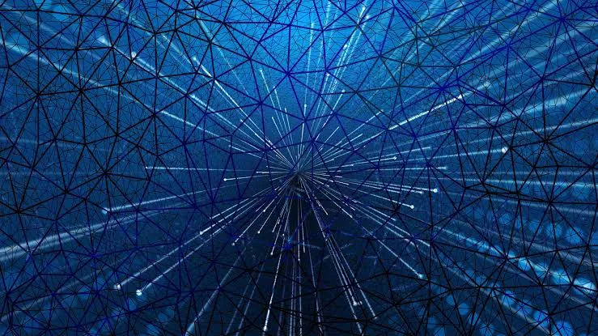
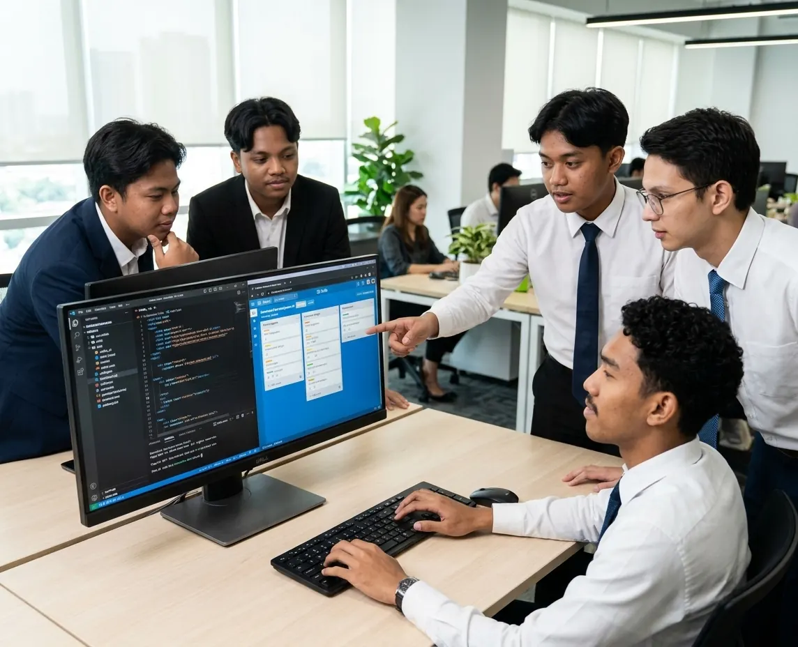

01
Bina antara muka yang jelas.
HTML, CSS dan JavaScript melalui projek sebenar: dari susun atur responsif hingga log pembaikan yang boleh dibaca.
Lihat projek web
Pelajar JMTI meneroka web, perkakasan dan sistem melalui projek sebenar.

Apa yang kami buat
Tiga meja kerja, satu kitaran yang sama: faham masalah, buat, uji, dan terangkan.
01
HTML, CSS dan JavaScript melalui projek sebenar: dari susun atur responsif hingga log pembaikan yang boleh dibaca.
Lihat projek web
02
Buka casing, kenal komponen dan belajar membaca simptom sebelum menukar apa-apa.
Lihat aktiviti hardware
03
Diagnostik BIOS, ralat memori dan log sistem: ujian dahulu, kesimpulan kemudian.
Lihat logbook bengkel
Fokus
01
HTML, CSS, JavaScript dan reka bentuk responsif.
02
PC building, diagnostik komponen, termal dan BIOS.
03
Konfigurasi OS, pemacu, pengoptimuman dan skrip utiliti.
04
Log ralat, BSOD, penanda aras dan pengoptimuman storan.
Kami berkumpul di Pusat Komputer, Aras 2. Setiap sesi bermula dengan soalan, dan berakhir dengan sesuatu yang boleh diuji.

Sertai
Bengkel, sprint dan sesi pembaikan dijalankan di makmal JMTI. Tiada syarat pengalaman.
Daftar minat